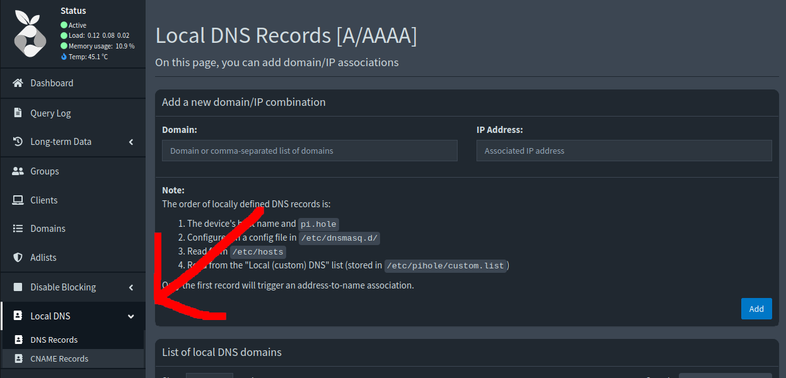

BytesOfProgress
Wiki
PiHole Install & Local DNS Config
Pi-hole is a network-wide ad blocker that acts as a DNS sinkhole. It effectively blocks advertisements and tracking domains for all devices connected to the network by intercepting DNS requests.
Once installed, you configure your router to use Pi-hole as the primary DNS server, and it begins filtering DNS requests according to its block lists. Pi-hole provides a web interface for monitoring and managing the DNS requests and blocked domains.
Requirements: A Raspberry Pi with Raspberry Pi OS (Raspbian) or a Debian PC / VM, root / sudo access, a static local IPv4. Recommendation: Do yourself a favor by using Ethernet, not WiFi!
PiHole Installation
Step 1: Download and execute the install script. If curl is not installed on your system, you can install it with "sudo apt install curl -y"
$ curl -sSL https://install.pi-hole.net | bash
Step 2: Follow the installation wizard: It will ask you if you really have a static local IPv4, which upstream DNS servers to use, if you want the default blocklist, if you want to install the webinterface, and if you want detailed logs.
After the webinterface question, it will ask you if you wish to install the webserver and required PHP modules. Hit yes, otherwise the webinterface will not work.
Step 3: Change the primary DNS of your router to the IP-Address of the PiHole.
Step 4: Webinterface Login: After the installation finished, the webinterface login password is displayed in the terminal. Make sure to copy this somewhere safe. You can access the webinterface with "http://ip.address/admin".
Local DNS Configuration
In your PiHole Webinterface, navigate to "Local DNS" ---> "DNS Records". Here you can make DNS Records for IP-Addresses. Make sure that you use something like ".local as your TLD, not something which exits in the outer internet, to avoid conflicts. Example:
router.homelab.local ---> 192.168.0.1
Now you can ping or nslookup the configures domain, to see if the query is being resolved correctly.
Whitelist & Blacklist
If your Pihole blocks queries you do not want to be blocked, you can whitelist it in "Domains". This also works the other way around: You can let your Pihole block certain domains by blacklisting them. This works for both root domains and specific subdomains. You can also add domains to the list as "wildcard": This includes the root domain and any subdomains.
Adding Adlists
To add more adlists, navigate to "Adlists" and paste the link of your chosen list. Then click on "Add". After that run "pihole -g" in the command line of the pihole or navigate to "Tools ---> Update Gravity". The gravity update is needed for the pihole to pull the domains of the newly added lists.
back